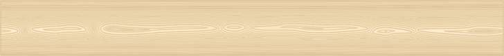
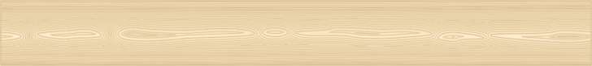

Вот, попытался нарисовать текстуру ели или сосны с некоторой степенью условности рисунка. 
Сам при необходимости старался найти фотографичные изображения.
Zeram, всё так. Я ожидал реакции с оценкой, насколько этот рисунок соответствует ожиданиям Астарты.
У меня лично не было опыта рисования таких текстур. Этот рисунок — довольно скороспелый результат и первый опыт. А для урока желателен всё-таки не первый опыт.
Сложность задачи в том, что текстуры даже одной породы дерева получаются на поверхностях разреза, распила довольно разнообразные. Понять тенденции этих рисунков и универсальный способ для их создания снаскоку нельзя. Вот я и не тороплюсь. Надо ещё попробовать варианты и способы.
Это ж не чёртиков рисовать.
Может у кого-то уже есть достаточный опыт. Я не против тоже посмотреть.
Тут что-то умнее, чем отрисовать фото или нарисовать нечто схематичное вручную все равно не придумаешь. Из специфичечких иннструментов CorelDRAW здесь могут оказаться полезными Envelope – для искривления волокон и Zipper distortion – для придания им живописной неровности.
А вообще это задача не для Корел. Я в таких случаях использую программную карту Wood в 3ds Max. Она хороша тем, что учитывает естественное направление волокон не только на боковых поверхностях, но и на срезах. Мелких деталей фактуры, правда, не передает. Зато выглядит "по векторному". В случае чего можно сказать, что в векторе и было нарисовано 8-)
Zeram / 28.03.2013, 08:40
Согласен. Рассматривать фоты разных срезов естественного дерева разных пород - это лучший урок. Остальное - голая техника.
Вот, попытался нарисовать текстуру ели или сосны с некоторой степенью условности рисунка.

Сам при необходимости старался найти фотографичные изображения.
Обрисованы полоски текстуры. А урок-то в чем?
Подобное я находил готовое.
Zeram, всё так. Я ожидал реакции с оценкой, насколько этот рисунок соответствует ожиданиям Астарты.
У меня лично не было опыта рисования таких текстур. Этот рисунок — довольно скороспелый результат и первый опыт. А для урока желателен всё-таки не первый опыт.
Сложность задачи в том, что текстуры даже одной породы дерева получаются на поверхностях разреза, распила довольно разнообразные. Понять тенденции этих рисунков и универсальный способ для их создания снаскоку нельзя. Вот я и не тороплюсь. Надо ещё попробовать варианты и способы.
Это ж не чёртиков рисовать.
Может у кого-то уже есть достаточный опыт. Я не против тоже посмотреть.
Может так?
"Ну или так" (с) :)
Тут что-то умнее, чем отрисовать фото или нарисовать нечто схематичное вручную все равно не придумаешь. Из специфичечких иннструментов CorelDRAW здесь могут оказаться полезными Envelope – для искривления волокон и Zipper distortion – для придания им живописной неровности.
А вообще это задача не для Корел. Я в таких случаях использую программную карту Wood в 3ds Max. Она хороша тем, что учитывает естественное направление волокон не только на боковых поверхностях, но и на срезах. Мелких деталей фактуры, правда, не передает. Зато выглядит "по векторному". В случае чего можно сказать, что в векторе и было нарисовано 8-)
Согласен. Рассматривать фоты разных срезов естественного дерева разных пород - это лучший урок. Остальное - голая техника.